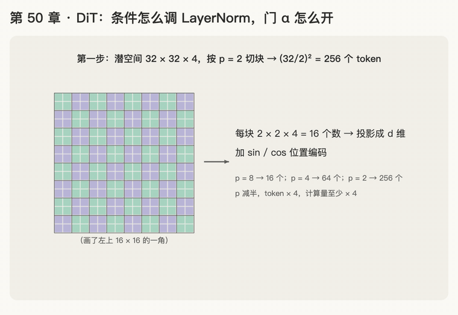

第 50 章 · DiT 与 MM-DiT：用 Transformer 当扩散的主干
本章回答：扩散模型里猜噪声的网络一直是 U-Net，能不能换成 Transformer？潜空间的"图"怎么变成 token？步数 t 和类别这些条件怎么告诉 Transformer，为什么"调 LayerNorm 的缩放和平移"最好？Stable Diffusion 3 的 MM-DiT 又怎么把文字和图片放进同一次注意力？
讲解日期：2026-11-18 · 上一章：第 49 章 Latent Diffusion 与 Rectified Flow · 下一章：第 51 章 视觉接 LLM
对应原文：DiTtransformer-deep-dive/materials/text/papers/dit-2212.09748.txt§3.2 L176–L290（patchify L181–L198、四种条件块 L209–L276、adaLN-Zero L236–L251、Table 1 L226–L236、输出 L265–L272）、Figure 5 L252–L254、FID 2.27 L26；SD3sd3-rectified-flow-transformers-2403.03206.txt§2 式 13 L120–L127、§3.1 logit-normal L217–L232、§4 MM-DiT L213–L330、文字编码器 L258
本章缩写：DiT = Diffusion Transformer（扩散 / Transformer）；MM-DiT = Multimodal DiT（多模态 DiT）；SD3 = Stable Diffusion 3；patchify（切小块，第 44 章）；p = patch size；T：token 个数（这里不是扩散总步数）；c = class / condition（类别 / 条件）；LN = LayerNorm（前作第 19 章）；adaLN = adaptive LayerNorm（自适应 / 层归一化：缩放和平移由条件算出来）；γ（gamma）、β（beta）：LayerNorm 的缩放和平移；α（alpha）：残差前的门；MLP = Multi-Layer Perceptron（多层感知机）；Gflops = Giga floating-point operations（十亿次浮点运算）；FID = Fréchet Inception Distance（弗雷歇 / Inception 网络 / 距离：生成图和真图的统计差距，越小越好）；T5 = Text-To-Text Transfer Transformer（文本到文本 / 迁移 / Transformer，一个文字编码器）；logit-normal（logit 正态：先抽一个正态分布的数，再用 sigmoid 压到 0 到 1）。全部缩写见 附录 · 缩写与术语表
讲解
第一步：把潜空间的"图"切成 token（2026-11-18）
类比：换一个画师，画法不变。 第 48、49 章的流程（潜空间、加噪、猜噪声、一步步去噪）一点不变，只把猜噪声的那个网络从 U-Net 换成 Transformer。原文的动机是"架构统一"：Transformer 在语言、视觉上都已经证明能越做越大，扩散也想用上（L66–L73）。
patchify（L181–L198）：DiT 在潜空间里工作（第 49 章）。一张 256 × 256 × 3 的图，编码后 z 是 32 × 32 × 4（L186）。和第 44 章的 ViT 一模一样，按 p × p 切块、每块线性投影成 d 维、加 sin / cos 位置编码：
| p | token 个数 T（I = 32） | 说明 |
|---|---|---|
| 8 | 16 | 每块 8 × 8 × 4 = 256 个数 |
| 4 | 64 | |
| 2 | 256 | DiT-XL/2 的 "/2"，最好但最贵 |
p 减半，T 变 4 倍，计算量至少变 4 倍；参数量几乎不变（L192–L198）。
输出：最后一层后，每个 token 线性解码回 p × p × 2C 个数：一半是猜的噪声，一半是方差（L270–L272）。拼回 32 × 32 × 4 的形状，就是"这张图上的噪声"。
一句话：DiT 把潜空间的 z 像 ViT 一样切成 \((I/p)^2\) 个 token，用 Transformer 猜噪声，最后每个 token 解码回一小块噪声。
第二步：条件怎么进来：adaLN 用条件算出 LayerNorm 的缩放和平移（2026-11-18）
网络要知道两件事：现在是第几步 t（有多脏），要画哪一类 c。DiT 试了四种做法（L209–L276）：
| 做法 | 怎么做 | 代价 |
|---|---|---|
| in-context（放在序列里） | 把 t、c 的向量当成两个额外的 token 接在序列里，像第 44 章的 [class] | 几乎不加 |
| cross-attention | 每块多一个交叉注意力，图像 token 当 Q，t、c 当 K、V（第 49 章） | 多约 15% |
| adaLN | LayerNorm 的 γ、β 不再是固定参数，而是由 t、c 算出来 | 最省 |
| adaLN-Zero | adaLN 再加一个门 α，初始化成 0（第三步） | 最省，效果最好 |
先回忆 LayerNorm（前作第 19 章）：一行数先减平均、除标准差，再乘 γ、加 β。γ、β 是学出来的固定参数，所有输入都一样。
adaLN：把 t 的向量和 c 的向量加起来，送进一个小 MLP，算出 γ 和 β（L270–L273）：
| 符号 | 意思 |
|---|---|
| \(e_t\)、\(e_c\) | 步数 t 的编码（sin / cos，第 48 章第五步）、类别 c 的嵌入向量 |
| ⊙ | 逐个相乘（前作第 20 章） |
| γ、β | 每个样本、每一步都不一样：条件变了，缩放和平移就变 |
数字演示（编的）：一行 x = [1, 2, 3]，LN(x) = [−1.225, 0, 1.225]（平均 2、标准差 0.816）：
| 条件 | MLP 算出的 γ | β | 输出 |
|---|---|---|---|
| t 很大（很脏） | [0.5, 0.5, 0.5] | [0, 0, 0.1] | [−0.612, 0, 0.712] |
| t 很小（快干净了） | [1.5, 1.5, 1.5] | [0.2, 0, 0] | [−1.637, 0, 1.837] |
同一个 x，换了条件，后面注意力和 MLP 看到的就不一样。原文强调 adaLN 对所有 token 用同一组 γ、β（L274–L276）：它是"整张图的调音旋钮"，不能逐个 token 调。
一句话：adaLN 用一个小 MLP 从"步数 + 类别"算出 LayerNorm 的 γ 和 β，条件就像旋钮一样调整整张图每一层的数值。
第三步：adaLN-Zero：残差前加一个门，一开始关上（2026-11-18）
类比：新员工先旁听。 新加的一层一开始还没学好，与其让它乱改结果，不如先让它"什么都不改"，等学会了再慢慢参与。
做法（L236–L251）：除了 γ、β，MLP 再多算一组 α，在每个子层输出加回残差之前乘上去：
一个 DiT 块从条件里一共算出 6 组数：注意力那边的 γ₁、β₁、α₁，MLP 那边的 γ₂、β₂、α₂。
Zero：把算 α 的那个 MLP 初始化成输出全 0，于是一开始 α = 0，整块等于"x 原样输出"（恒等函数，L249–L250）。这和前作第 18 章残差的想法一脉相承：深网络一开始最好每层都是"什么都不做"，训练稳。
数字演示：x = [1, 2, 3]，注意力子层输出 [0.5, −0.5, 1]：
| α | 加回残差后 |
|---|---|
| 0（刚初始化） | [1, 2, 3]：原样不动 |
| 0.2（训练一段后） | [1.1, 1.9, 3.2] |
结果：四种做法里 adaLN-Zero 在训练全程 FID 都最好（Figure 5，L252–L254）。
一句话：adaLN-Zero 再从条件算一个门 α 乘在子层输出上，α 一开始是 0，每块先当恒等函数，训练更稳、效果最好。
第四步：越大越好：Gflops 和画质（2026-11-18）
DiT 沿用 ViT 的尺寸（Table 1，L226–L236）：
| 模型 | 层数 | d | 头数 |
|---|---|---|---|
| DiT-S | 12 | 384 | 6 |
| DiT-B | 12 | 768 | 12 |
| DiT-L | 24 | 1024 | 16 |
| DiT-XL | 28 | 1152 | 16 |
再配上 p = 8、4、2，一共 12 个模型。原文的发现：计算量（Gflops）越大，FID 越好，不管是加深加宽，还是把 p 变小、token 变多（摘要 L20–L23）。最大的 DiT-XL/2 在 ImageNet 256 × 256 上拿到 FID 2.27，超过之前所有 U-Net 扩散模型（L26、L44）。
这正是第 44 章 ViT 的老故事：Transformer 少了"看图常识"，但规模上去以后，它的扩展性最好。
一句话：DiT 的画质随 Gflops 稳定变好，DiT-XL/2 打败了所有 U-Net 扩散模型。
第五步：MM-DiT（SD3）：文字和图片拼成一条序列，各用各的权重（2026-11-18）
DiT 只做"按类别画"（1000 类）。文生图要按一整句话画。SD3 的 MM-DiT（§4，L229–L330）：
- 两条序列：图片潜空间按 2 × 2 切块得到图像 token；文字用三个编码器（CLIP-L/14、CLIP-G/14、T5 XXL，L258）得到文字 token。
- 拼起来一起做注意力（L306–L310）：图像 token 和文字 token 首尾相接，做一次自注意力。
- 各用各的权重（L313–L320）：图像 token 用一套 \(W^Q, W^K, W^V\)、MLP，文字 token 用另一套。原文说：等于"两个独立的 Transformer，只在注意力那一步把两条序列合在一起"，让两边"在自己的空间里工作，又能顾及对方"。
- 调制：步数 t 和"整句话的汇总向量"（pooled，CLIP 的句向量）照 DiT 的 adaLN 方式进来（L229–L238）。
和第 49 章交叉注意力的区别（编的：4 个图像 token、2 个文字 token）：
| 分数表 | 谁看谁 | |
|---|---|---|
| 交叉注意力（LDM） | 4 × 2 | 只有图看文字 |
| MM-DiT 联合注意力 | 6 × 6 | 图看图、图看文字、文字看图、文字看文字 |
文字 token 也能看到图，在每一层随着图一起更新，不再是一份固定不变的"订单"。
训练目标用第 49 章的 Rectified Flow：SD3 写成 \(z_t = (1-t)\,x_0 + t\,\epsilon\)（式 13，L124），注意这里 t = 0 是图、t = 1 是噪声，和 RF 原论文正好反过来，网络直接输出速度（L126–L127）。另一个改动是 t 不再均匀抽：用 logit-normal，先抽 u ~ 𝒩(0, 1)，再 t = sigmoid(u)（L217–L232），让中间的 t 被抽到得更多，因为两头（几乎是图、几乎是噪声）太容易：
| u | −2 | −1 | 0 | 1 | 2 |
|---|---|---|---|---|---|
| t = sigmoid(u) | 0.119 | 0.269 | 0.5 | 0.731 | 0.881 |
u 大多落在 −2 到 2，t 就大多落在 0.12 到 0.88 之间，靠近 0.5 的最多。
一句话：MM-DiT 把文字 token 和图像 token 拼成一条序列做联合注意力，两种 token 各用各的权重；训练用 Rectified Flow，t 用 logit-normal 抽，多练中间那段。
动画演示：一个 DiT 块里，条件怎么调 LayerNorm

可交互版：animations/50-dit-mmdit.html（需要用本地服务打开，见 animations/README.md"跑起来看"；滑块：门 α 从 0 拖到 1，看加回残差后的结果怎么从"原样"慢慢变成"全部采纳"）。
怎么看：
- 32 × 32 × 4 的潜空间按 p = 2 切成 256 个 token（第一步）；
- 步数 t 和类别 c 经 MLP 算出 γ、β、α 六组数（第二、三步）；
- LN 后乘 γ 加 β，进注意力，输出乘 α 再加回 x；α = 0 时整块原样输出（第三步）；
- MM-DiT：文字 token 和图像 token 拼在一起，6 × 6 的联合分数表分成四块（第五步）。
练习与作答记录
题 1（第一步）：512 × 512 的图，潜空间 64 × 64 × 4，p = 2。一共多少个 token？如果 p = 4 呢？
题 2（第二步）：x = [2, 4, 6]，LN(x) = [−1.225, 0, 1.225]。条件算出 γ = [2, 2, 2]、β = [0, 1, 0]，adaLN 的输出是多少？
题 3（第三步）：（a）α 初始化成 0，一个 DiT 块一开始输出什么？（b）为什么这样能让训练更稳？
题 4（第五步）：3 个图像 token、2 个文字 token。（a）MM-DiT 的联合分数表多大？（b）LDM 式的交叉注意力分数表多大？（c）MM-DiT 里"文字看图"那一块是几乘几？
口诀
画师换成 Transformer：潜图切块当 token，p 减一半算四倍。
步数类别进 MLP，算出缩放和平移，调好 LayerNorm 再进层。
残差前面加道门，初始关上先旁听。
算力越大画越好，XL 斜杠二最强。
图文拼成一条队，各用各的权重，一起做注意力；t 用 logit 正态，多练中间段。
本章复习卡片
必背：B16–B17（B16 DiT 的 patchify 和 adaLN-Zero；B17 MM-DiT 的联合注意力与 SD3 的训练设置）。练习做完后，按答错、卡住的地方再补。
附录 · 延伸阅读
留给以后深入学习用，不影响本章主线。★ 是建议先读的。
推荐阅读
| 读什么 | 读哪里 | 读它为了什么 |
|---|---|---|
| ★ Scalable Diffusion Models with Transformers（DiT，Peebles & Xie 2022） | §3.2 L176–L290；Figure 5 L252；§4 缩放实验 L320 起 | 本章原文：patchify、四种条件块、adaLN-Zero、规模和 FID |
| ★ Scaling Rectified Flow Transformers for High-Resolution Image Synthesis（SD3，Esser 等 2024） | §2 L71–L127；§3.1 L195–L240；§4 L213–L330；§5.2 架构对比 L474–L547 | MM-DiT、RF 的时间步采样、QK 归一化 |
| FiLM（Perez 等 2017） | 全文（本地没有文本版） | "用条件算缩放和平移"的出处 |
| U-ViT（Bao 等 2022） | 全文（本地没有文本版） | 另一种 Transformer 扩散主干：把 t、c 当 token，加长跳线 |
| 本书第 44、48、49 章 | 切小块、DDPM、潜空间和 Rectified Flow |
数学原理
- token 数：\(T = (I/p)^2\)，注意力代价 ∝ \(T^2\)，p 减半代价约 16 倍（注意力部分）、至少 4 倍（全部）。
- FiLM / adaLN：\(\gamma(c) \odot h + \beta(c)\)，用条件对特征做逐维仿射变换。
- 恒等初始化：\(x + 0 \cdot f(x) = x\)；α = 0 让每块开始时什么都不改，梯度仍能流到 α。
- logit-normal：\(t = \sigma(u)\)，\(u \sim \mathcal{N}(m, s^2)\)；m 控制偏向哪头，s 控制多集中（式 19）。
公式清单
| 公式 | 意思 |
|---|---|
| \(T = (I/p)^2\) | DiT 的 token 数 |
| \(\gamma, \beta, \alpha = \text{MLP}(e_t + e_c)\) | 条件算出调制参数 |
| \(x \leftarrow x + \alpha \odot f(\gamma \odot \text{LN}(x) + \beta)\) | adaLN-Zero 子层（f 是注意力或 MLP） |
| \(z_t = (1-t)\,x_0 + t\,\epsilon\) | SD3 的 RF 写法（t = 0 是图，式 13） |
| \(t = \text{sigmoid}(u)\)，\(u \sim \mathcal{N}(0, 1)\) | logit-normal 抽 t |
代码对照：把本章的数字用代码算一遍
NumPy。代码在仓库本地
beyond-transformer/solutions/chapter-code/ch50_dit_mmdit.py，配套测试tests/test_ch50.py，notebook 在notebooks/ch50_dit_mmdit.ipynb：
bash cd beyond-transformer/solutions/chapter-code uv run python ch50_dit_mmdit.py uv run pytest tests/test_ch50.py
讲义 ↔ 代码：
| 讲义 | 公式 | 写法 | 跑出来 |
|---|---|---|---|
| 第一步 token 数 | \((I/p)^2\) | n_tokens(32, p) |
p = 8、4、2 → 16、64、256 |
| 第二步 adaLN | \(\gamma \odot \text{LN}(x) + \beta\) | ada_ln(x, gamma, beta) |
[−0.612, 0, 0.712]；[−1.637, 0, 1.837] |
| 第三步 门 α | \(x + \alpha \odot f\) | gated_residual(x, f_out, alpha) |
α = 0 → [1, 2, 3]；α = 0.2 → [1.1, 1.9, 3.2] |
| 第五步 联合注意力 | 拼接 | joint_quadrants(4, 2) |
6 × 6，四块：4 × 4、4 × 2、2 × 4、2 × 2 |
| 第五步 logit-normal | \(\sigma(u)\) | logit_normal_t([-2, -1, 0, 1, 2]) |
0.119、0.269、0.5、0.731、0.881 |
关键几行：
ln = (x - x.mean()) / x.std() # 普通 LayerNorm（这里没有 eps）
h = gamma * ln + beta # adaLN：γ、β 由条件算出
x = x + alpha * f(h) # adaLN-Zero：门 α 一开始是 0
seq = np.concatenate([img_tokens, txt_tokens]) # MM-DiT：两条序列拼起来做一次注意力
t = 1 / (1 + np.exp(-u)) # logit-normal：u 抽自 N(0, 1)
代码里才看得到的 2 件事：
- DiT 官方代码写的是
x * (1 + scale) + shift，scale 初始为 0 时缩放就是 1；讲义写成 γ ⊙ LN(x) + β，两者只差一个"+1"的约定。 - MM-DiT 的"各用各的权重"在代码里就是：拼接前图像 token 和文字 token 分别乘自己的 \(W^Q, W^K, W^V\)，拼接后算一张大分数表，再按位置拆回两边，各进各的 MLP。
自己改一改（不影响练习答案）：
gated_residual的 α 从 0 改到 1，看输出怎么从 x 变成 x + f。logit_normal_t里把 u 改成从 𝒩(1, 1) 抽（m = 1），看 t 是不是偏向噪声那头。